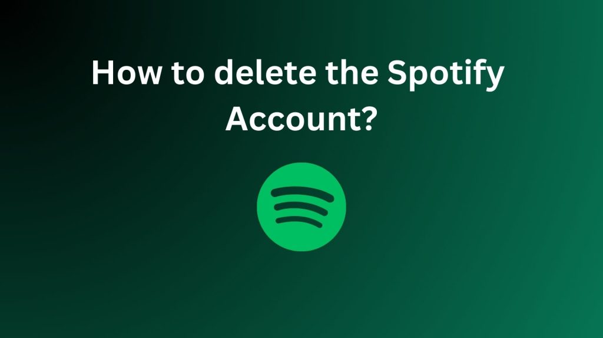

In a world where streaming services seem to pop up faster than we can say “playlist,” you might find yourself in need of a little digital decluttering. If it’s time to remove your Spotify account and you're ready to bid adieu, don’t worry—you’re not alone. Maybe you’ve found a new favorite streaming service, or perhaps you’re just looking for a break from that endless “Discover Weekly” playlist. Whatever your reason, delete spotify account is a straightforward process. Buckle up as we navigate the steps to reclaim your inbox and digital space!
Before we dive into the nitty-gritty of account deletion, let’s take a moment to consider why you might want to part ways with Spotify. Perhaps your playlist is getting a bit too eclectic, and you're craving something new. Maybe you’ve decided to go off the grid for a while, or you're just tired of hearing the same old hits. Whatever your motivation, it’s essential to be sure before you hit that delete button. Remember, you’ll lose your playlists, saved music, and any premium features you’ve been enjoying.
One of the first things you’ll want to do is back up any music or playlists you’ve grown attached to. If you’re planning on moving to another service, most platforms offer easy ways to transfer your playlists. Tools like TuneMyMusic and Soundiiz can help you move your favorite tracks over to a new service without losing your musical memories.
To get started, you’ll need to log into your Spotify account. This is the online equivalent of unlocking your front door before you can start packing up your things. Head over to Spotify’s website and enter your credentials. If you’ve forgotten your password, there’s no need to panic—just follow the instructions to reset it.
Once you're logged in, it’s time to find your account settings. Click on your profile in the top right corner of the page. From the dropdown menu, select “Account.” This is where the magic happens—or, in this case, the account deletion.
In your account settings, you’ll need to scroll down and find the section labeled “Account Overview.” Look for the link that says “Close Account” or something similar. If you’re having trouble locating it, don’t worry; it’s a bit like finding a needle in a haystack, but it’s there. Spotify sometimes buries this option to make sure you’re making an informed decision.
Spotify will present you with some information about what happens when you delete your account. This is where they remind you of all the things you’ll miss: your playlists, saved tracks, and any premium features. It’s a bit like a guilt trip, but it’s important to read this to understand the consequences. If you’re still sure about deleting your account, proceed to the next step.
Spotify will ask you to confirm that you really want to delete your account. This is the digital equivalent of a last-minute pep talk. You’ll likely need to enter your password one more time for security reasons. If you’re ready to say goodbye, click on the “Close Account” button.
After confirming your decision, Spotify will send you an email to finalize the process. This email is their way of saying, “Are you really, really sure?” Click the confirmation link in the email to complete the deletion process. If you don’t see the email, check your spam folder—it might be hanging out with your other neglected digital correspondence.
Keep in mind that Spotify doesn’t delete your account immediately. There’s usually a grace period during which you can change your mind. If you decide to return within this period, you might be able to recover your account and all your playlists. Once the grace period expires, your account will be permanently deleted, and there’s no turning back.
Congratulations! You’ve successfully deleted your Spotify account. Whether you’re taking a break from streaming or moving on to greener pastures, you’ve made space in your digital life. Take a moment to revel in your decluttering accomplishment—perhaps with a cup of coffee and a bit of celebratory music from a new source.
Now that you’ve deleted your Spotify account, it’s time to explore other options. There are plenty of streaming services out there, each with its own unique features. Whether you’re diving into Apple Music, Tidal, or something entirely new, there’s a world of music waiting for you.
If you're a music lover and Spotify user, you might have noticed something new popping up on your screen lately—lyrics! Yes, that’s right! Now you can sing along to your favorite songs without having to Google the lyrics or rely on your own questionable memory. So, let's dive into the world of lyrics on Spotify and explore why this feature is a game-changer for music fans everywhere.
Note: Deleting your account is irreversible once the grace period ends. Make sure you're ready to say goodbye to your playlists and saved tracks!